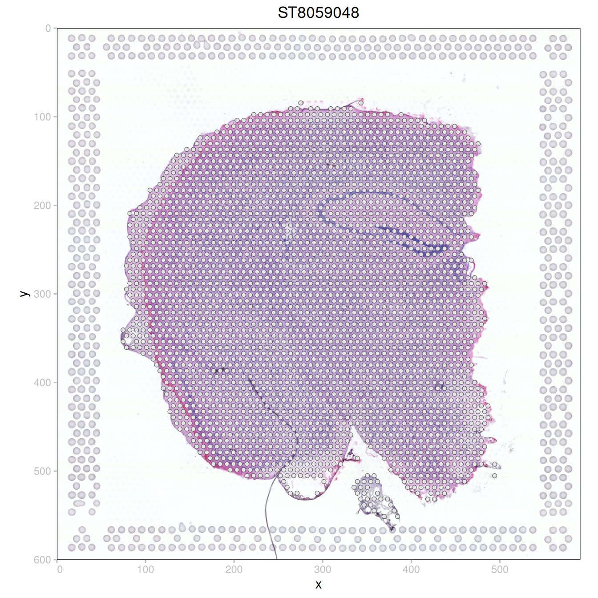
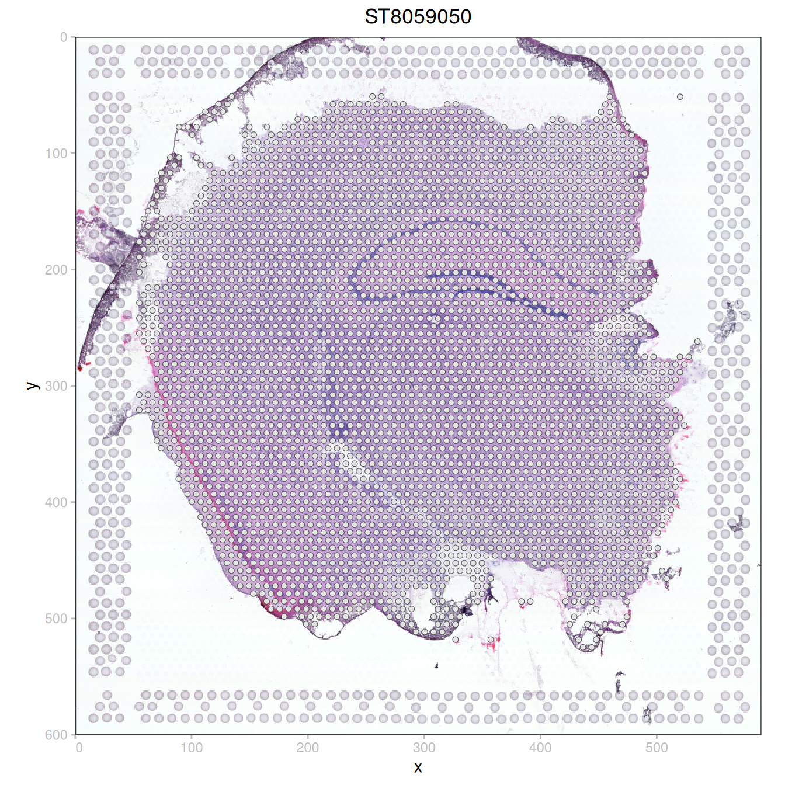
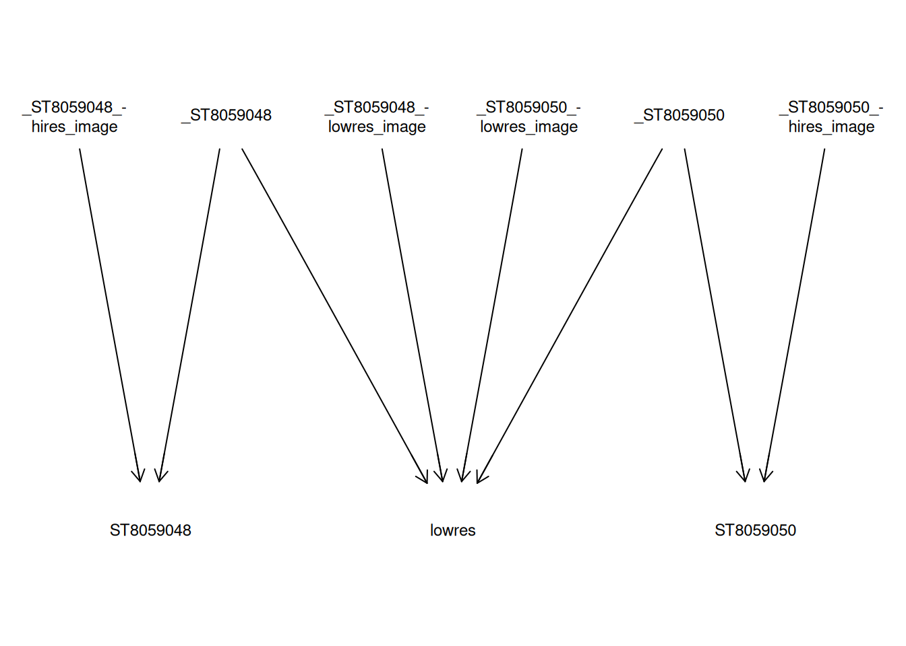
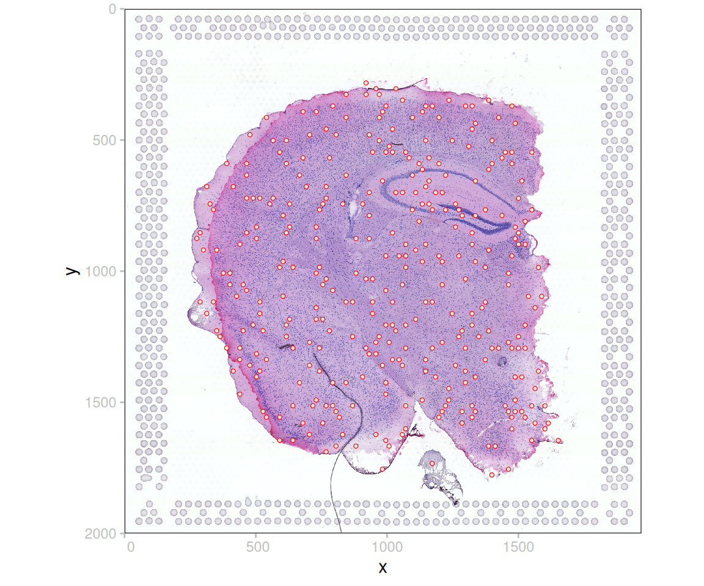
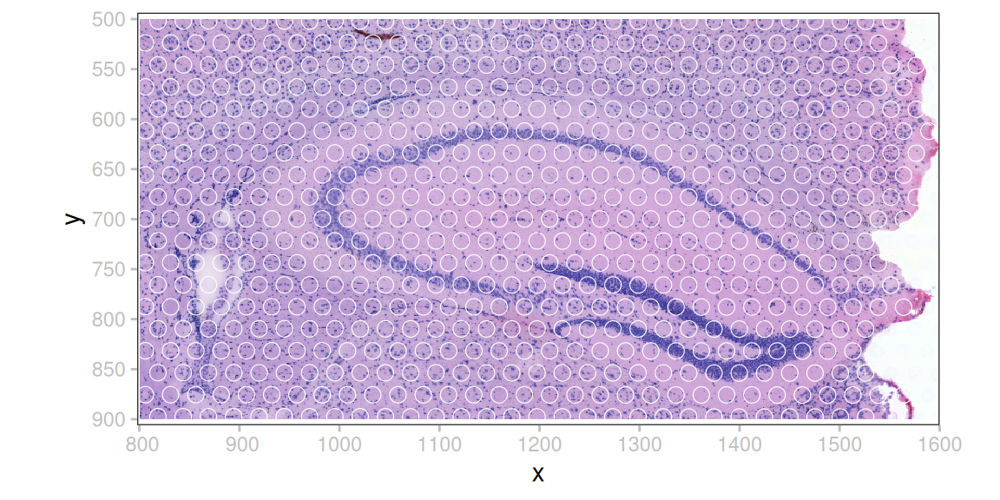
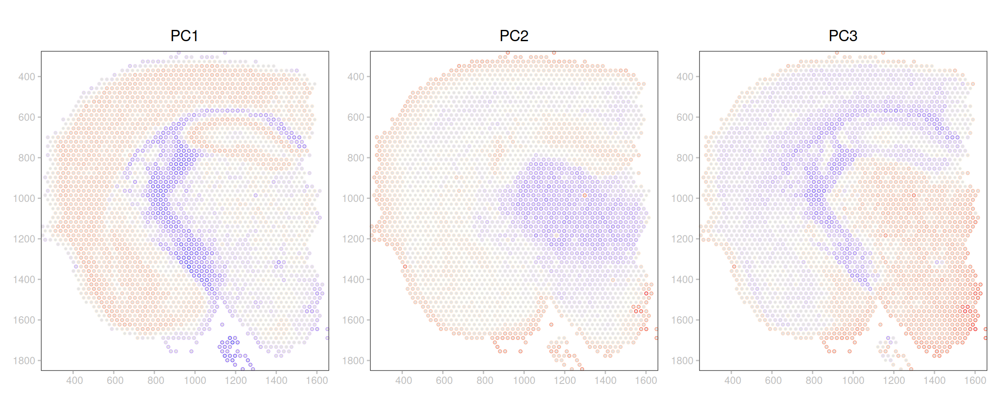
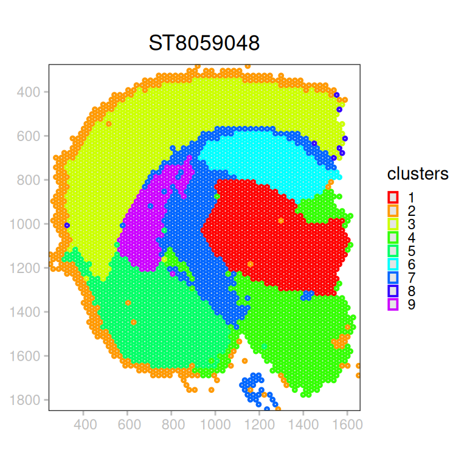

library(ggplot2)
library(scrapper)
library(patchwork)
library(Rgraphviz)
library(spatialdataR)
library(SpatialData.data)
library(SpatialData.plot)
library(SingleCellExperiment)Visium
spatial transcriptomics
sequencing-based
preamble
(sd <- SD.data_load("MouseBrainVis"))class: SpatialData
- images(4):
- ST8059048_hires_image (3,2000,1969)
- ST8059048_lowres_image (3,600,591)
- ST8059050_hires_image (3,2000,1968)
- ST8059050_lowres_image (3,600,590)
- shapes(2):
- ST8059048 (2987,circle)
- ST8059050 (3496,circle)
- tables(1):
- table (31053,6484) [ST8059048,ST8059050]
coordinate systems(2):
- ST8059048(2): ST8059048_hires_image ST8059048
- ST8059050(2): ST8059050_hires_image ST8059050analysis
Unfortunately, coordinate transformations are unspecified for the low-resolution version of these data; we’ll add these here based on a (visual) guesstimate:
ct <- "lowres"
for (s in c("ST8059048", "ST8059050")) {
i <- grep(paste0(s, "_lowres"), imageNames(sd))
image(sd, i) <- addCT(image(sd, i), name=ct, type="identity")
shape(sd, s) <- addCT(shape(sd, s), name=ct, type="scale", data=list(0.0345, 0.0345))
print(plotSpatialData(sd, "lowres") + plotImage(i) + plotShape(s) + ggtitle(s))
}

The resulting graph of coordinate transformations looks as follows; here, source nodes = spatial elements, and target nodes = coordinate spaces.
CTplot(CTgraph(sd))
Alternatively, we can use the high-resolution data as is:
n <- length(s <- shape(sd))
shape(sd, "spots") <- s[sample(n, 333)]
plotSpatialData(sd) +
plotImage() +
plotShape("spots", col="red")
bb <- list(xmin=800, xmax=1600, ymin=500, ymax=900)
sp <- crop(sd[c("images", "shapes"), list(1, 1)], bb)
plotSpatialData(sp) +
plotImage() +
plotShape(col="white", fill=NA)
(se <- tables(sd)[[1]])class: SingleCellExperiment
dim: 31053 6484
metadata(0):
assays(1): X
rownames(31053): Xkr4 Gm1992 ... Vmn2r122 CAAA01147332.1
rowData names(0):
colnames(6484): AAACAAGTATCTCCCA-1 AAACACCAATAACTGC-1 ...
TTGTTTCCATACAACT-1-1 TTGTTTGTGTAAATTC-1
colData names(3): in_tissue array_row array_col
reducedDimNames(1): spatial
mainExpName: NULL
altExpNames(0):plotSpatialData(sd) + plotShape(as="centroid", col="array_row") +
plotSpatialData(sd) + plotShape(as="centroid", col="mt-Co1") +
plot_layout(nrow=1) & scale_colour_viridis_c()# perform standard processing:
# - log-library size normalization
# - highly variable gene selection
# - principal component analysis
# - shared-nearest neighbor graph construction
# - community detection using Leiden algorithm
assayNames(se) <- "counts"
se <- normalizeRnaCounts.se(se)
se <- chooseRnaHvgs.se(se, block=regions(se))
se <- runPca.se(se, features=rowData(se)$hvg)
se <- clusterGraph.se(se, method="leiden", resolution=0.5)
table(se$clusters)
1 2 3 4 5 6 7 8 9 10
807 537 771 952 414 543 720 1038 286 416 # add PCs as cell metadata
pc <- reducedDim(se, "PCA")
colData(se) <- cbind(colData(se), pc)
# overwrite table in copy
sp <- sd; sp@tables$table <- se # 'table<-' shuffles data; needs fix!# visualize PCs 1-3 spatially
lapply(head(colnames(pc), 3), \(.) {
plotSpatialData(sp) +
plotShape(as="centroid", col=.) + ggtitle(.) +
scale_colour_gradient2(low="blue", mid="ivory", high="red")
}) |>
wrap_plots(nrow=1) &
theme(legend.position="none")
plotSpatialData(sp) +
ggtitle(i <- "ST8059048") +
plotShape(i, as="centroid", col="clusters", size=2/3) +
scale_colour_manual(values=rainbow(nlevels(se$clusters))) +
guides(col=guide_legend(override.aes=list(size=2, shape=15)))
appendix
Notesession
sessionInfo()R version 4.6.1 (2026-06-24)
Platform: x86_64-pc-linux-gnu
Running under: Ubuntu 24.04.5 LTS
Matrix products: default
BLAS: /usr/lib/x86_64-linux-gnu/openblas-pthread/libblas.so.3
LAPACK: /usr/lib/x86_64-linux-gnu/openblas-pthread/libopenblasp-r0.3.26.so; LAPACK version 3.12.0
locale:
[1] LC_CTYPE=C.UTF-8 LC_NUMERIC=C LC_TIME=C.UTF-8
[4] LC_COLLATE=C.UTF-8 LC_MONETARY=C.UTF-8 LC_MESSAGES=C.UTF-8
[7] LC_PAPER=C.UTF-8 LC_NAME=C LC_ADDRESS=C
[10] LC_TELEPHONE=C LC_MEASUREMENT=C.UTF-8 LC_IDENTIFICATION=C
time zone: UTC
tzcode source: system (glibc)
attached base packages:
[1] stats4 grid stats graphics grDevices datasets utils
[8] methods base
other attached packages:
[1] SingleCellExperiment_1.35.2 SummarizedExperiment_1.43.0
[3] Biobase_2.73.2 GenomicRanges_1.65.4
[5] Seqinfo_1.3.2 IRanges_2.47.5
[7] S4Vectors_0.51.10 MatrixGenerics_1.25.0
[9] matrixStats_1.5.0 SpatialData.plot_0.99.9
[11] SpatialData.data_0.99.10 spatialdataR_0.99.46
[13] Rgraphviz_2.57.2 graph_1.91.0
[15] BiocGenerics_0.59.12 generics_0.1.4
[17] patchwork_1.3.2 scrapper_1.7.9
[19] ggplot2_4.0.3
loaded via a namespace (and not attached):
[1] DBI_1.3.0 RBGL_1.89.0 httr2_1.3.0
[4] anndataR_1.3.2 rlang_1.3.0 magrittr_2.0.5
[7] Rarr_2.1.44 e1071_1.7-17 compiler_4.6.1
[10] RSQLite_3.53.3 paws.storage_0.11.0 png_0.1-9
[13] vctrs_0.7.3 pkgconfig_2.0.3 wk_0.9.5
[16] fastmap_1.2.0 dbplyr_2.6.0 XVector_0.53.0
[19] labeling_0.4.3 paws.common_0.9.0 rmarkdown_2.32
[22] purrr_1.2.2 bit_4.6.0 xfun_0.61
[25] cachem_1.1.0 beachmat_2.29.3 grumpy_0.1.1
[28] jsonlite_2.0.0 blob_1.3.0 DelayedArray_0.39.8
[31] uuid_1.2-2 parallel_4.6.1 R6_2.6.1
[34] RColorBrewer_1.1-3 reticulate_1.47.0 Rcpp_1.1.2
[37] knitr_1.52 R.utils_2.13.0 Matrix_1.7-6
[40] tidyselect_1.2.1 duckspatial_1.2.1 abind_1.4-8
[43] yaml_2.3.12 curl_8.0.0 lattice_0.23-1
[46] tibble_3.3.1 withr_3.0.3 S7_0.2.2
[49] evaluate_1.0.5 sf_1.1-3 units_1.0-1
[52] proxy_0.4-29 BiocFileCache_3.3.0 xml2_1.6.0
[55] pillar_1.11.1 BiocManager_1.30.27 filelock_1.0.3
[58] KernSmooth_2.23-27 renv_1.3.1 scales_1.4.0
[61] class_7.3-24 glue_1.8.1 tools_4.6.1
[64] ggnewscale_0.5.2 BiocNeighbors_2.7.3 duckdb_1.5.6.9002
[67] cli_3.6.6 S4Arrays_1.13.2 viridisLite_0.4.3
[70] dplyr_1.2.1 gtable_0.3.6 R.methodsS3_1.8.2
[73] digest_0.6.39 classInt_0.4-11 SparseArray_1.13.4
[76] ZarrArray_1.1.7 htmlwidgets_1.6.4 farver_2.1.2
[79] memoise_2.0.1 htmltools_0.5.9 R.oo_1.27.1
[82] lifecycle_1.0.5 bit64_4.8.6